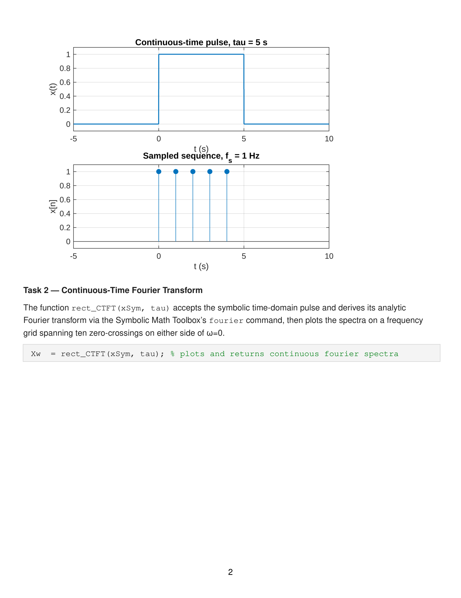
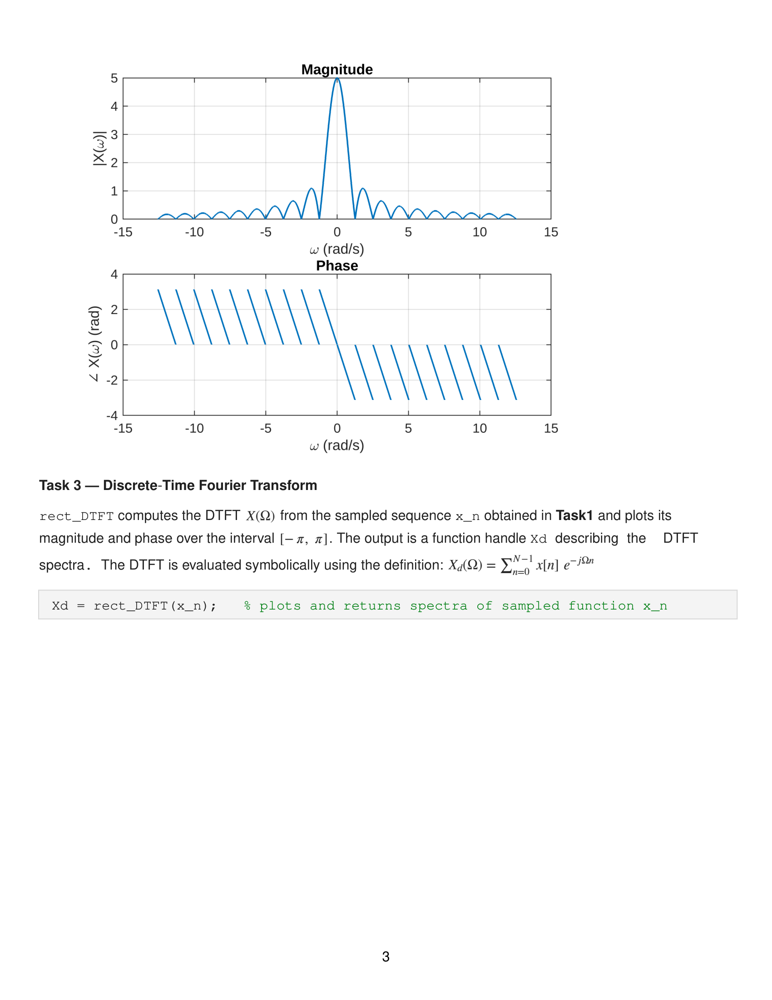
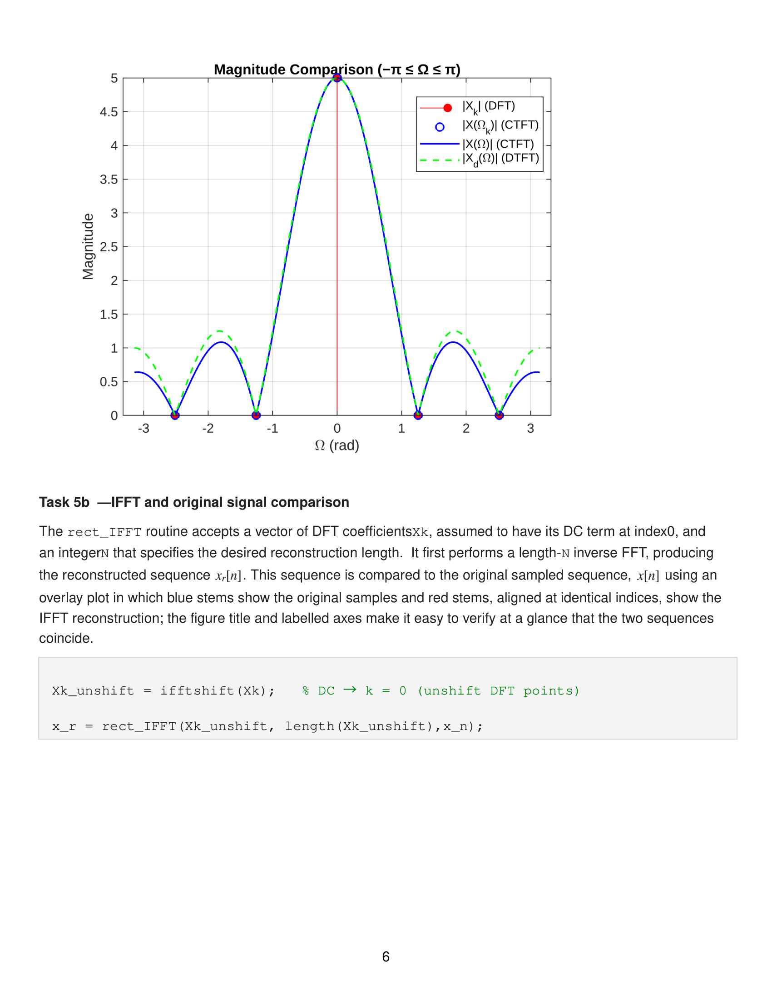
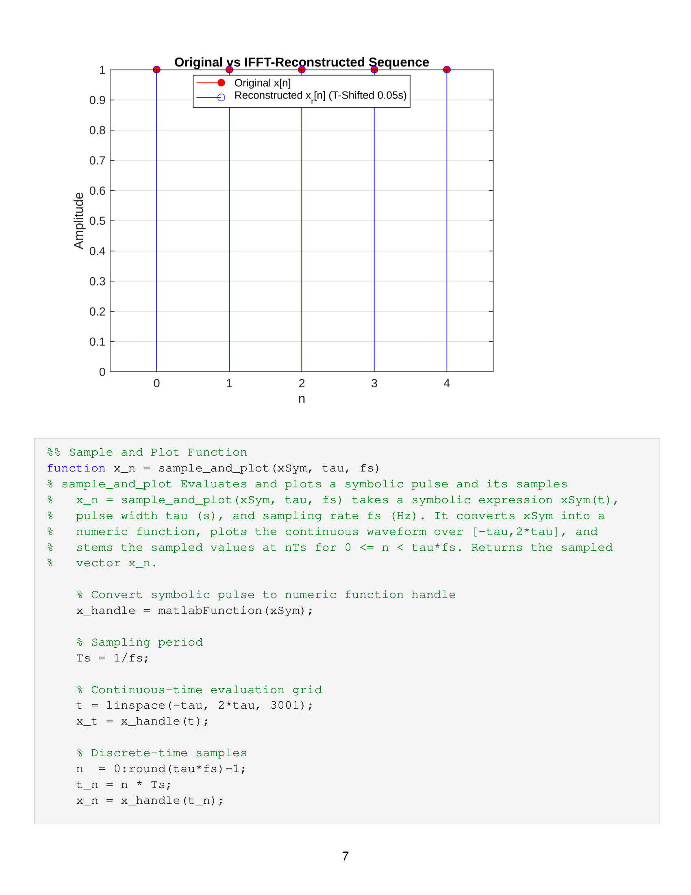
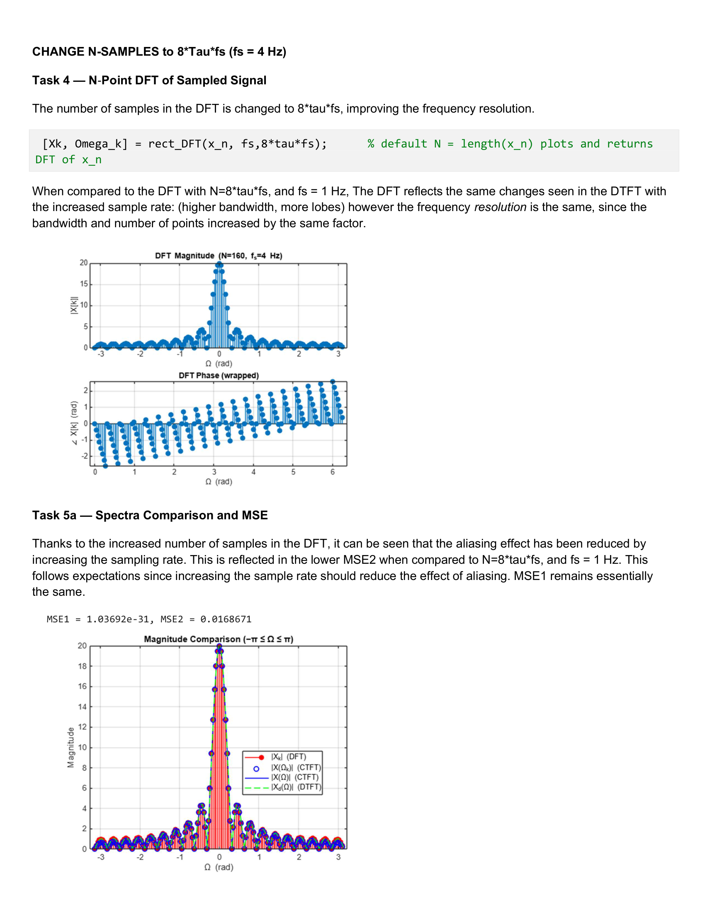
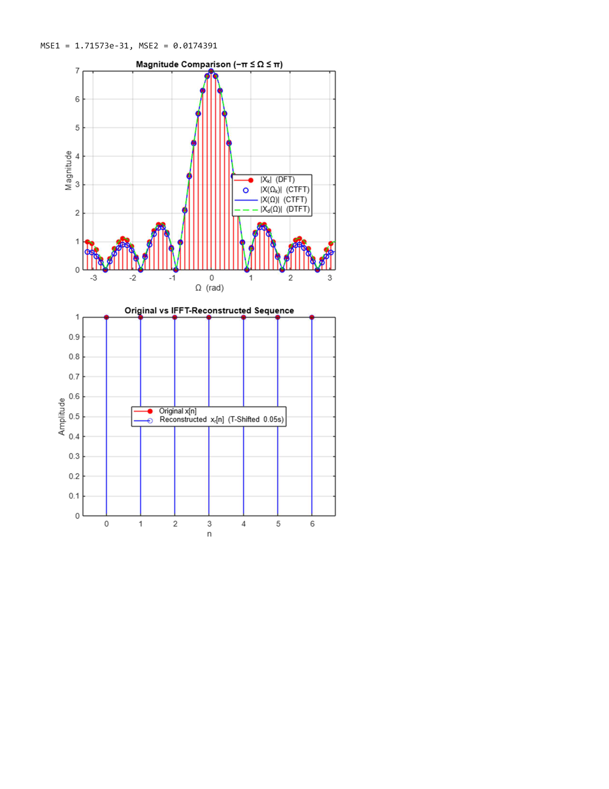
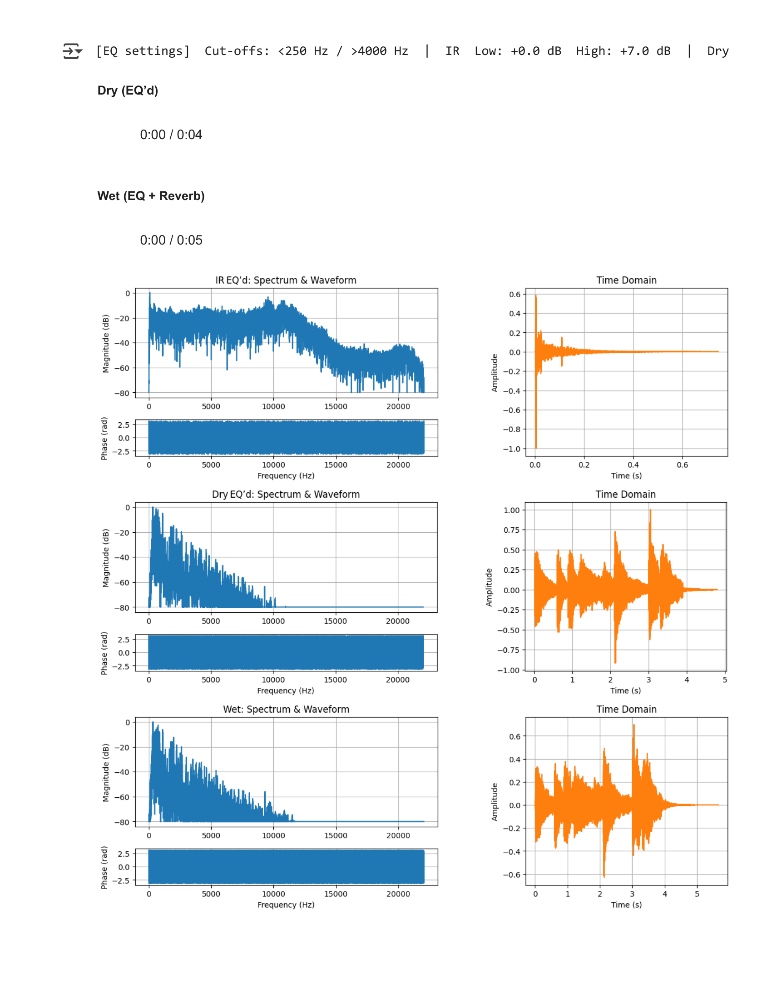

Overview
This two-part final project for EECE 3210 (Signals & Linear Systems) explores the Discrete Fourier Transform and its practical applications. Part 1 builds a complete spectral analysis pipeline in MATLAB, comparing the CTFT, DTFT, and DFT of a rectangular pulse signal and demonstrating perfect reconstruction via the inverse FFT. Part 2 applies these concepts to real-world audio processing, implementing a convolution reverb system in Python that applies room impulse responses to dry audio signals using FFT-based convolution.
Part 1: Fourier Transform Comparison
Starting from a continuous-time rectangular pulse, the project systematically derives and compares three representations of the signal's frequency content:
- CTFT (Continuous-Time Fourier Transform): Analytic sinc-shaped magnitude spectrum computed symbolically, serving as the ground truth for spectral content.
- DTFT (Discrete-Time Fourier Transform): Frequency response of the sampled sequence, evaluated symbolically over [−π, π] to observe aliasing effects from sampling.
- N-Point DFT: Practical FFT-based computation with finite samples, compared against the CTFT and DTFT to quantify spectral leakage and resolution trade-offs.

Rectangular pulse (tau=5s) and sampled discrete sequence at fs=1 Hz

CTFT — sinc magnitude and phase of the rectangular pulse
Spectra Comparison & Reconstruction
The three transforms were overlaid on a single plot to visually compare how well the DFT approximates the continuous-domain CTFT. Mean squared error (MSE) was computed between the DFT and CTFT magnitudes to quantify approximation accuracy. The effect of increasing the sampling rate and DFT length on reducing aliasing and spectral leakage was also investigated.

Magnitude comparison — DFT, CTFT, and DTFT overlaid showing convergence

Perfect reconstruction — original samples vs. IFFT output
Parameter Studies
Additional experiments varied the sampling rate and DFT zero-padding to study their effects on spectral resolution and aliasing:
- Increased sampling rate (fs=4 Hz): Higher sampling pushes aliased replicas further apart, improving agreement between the DFT and CTFT in the baseband.
- Zero-padded DFT (N=8×tau×fs): Interpolating the DFT with additional zero-padded points produces a smoother spectral estimate that closely tracks the continuous sinc envelope.
- Extended pulse width (tau=7): Narrower mainlobe in the frequency domain, demonstrating the time-frequency duality of the Fourier transform.

Zero-padded DFT (N=8×tau×fs) — smooth spectral interpolation

Extended pulse (tau=7) — narrower mainlobe demonstrating time-frequency duality
Part 2: Convolution Reverb
The second part applies Fourier analysis to audio signal processing, implementing a convolution reverb pipeline in Python. A dry audio signal is convolved with a room impulse response (IR) to simulate the acoustic characteristics of a real physical space. The convolution is performed efficiently in the frequency domain using the FFT:
- Impulse response loading: Real-world room IRs captured from acoustic spaces, loaded and preprocessed with band-pass EQ (250 Hz – 4000 Hz cutoffs).
- FFT-based convolution: Both the dry signal and IR are transformed to the frequency domain, multiplied, and inverse-transformed to produce the wet (reverbed) output.
- Spectral analysis: Magnitude and phase spectra of the IR, dry signal, and wet output are plotted alongside their time-domain waveforms to visualize how convolution shapes the frequency content.

Convolution reverb analysis — spectrum (magnitude + phase) and time-domain waveforms for IR, dry, and wet signals